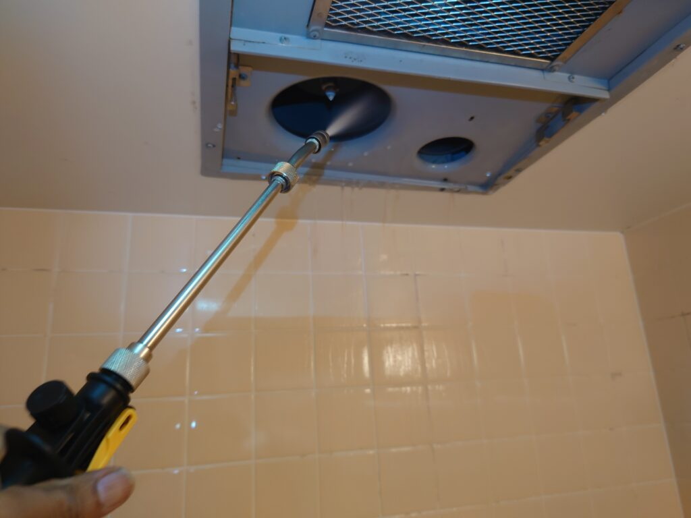
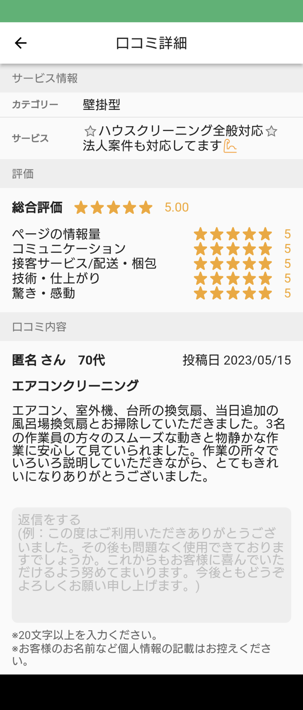

2023年5月16日 東京都S区のエアコンクリーニングと浴室換気扇の洗浄クリーニング、キッチン換気扇クリーニング、室外機高圧洗浄クリーニングを同時に実施して頂いたお客様からクチコミ満点を頂きました!   東京都S区のお客様、普段御自分ではなかなか掃除出来ないので、可能ならばまとめて綺麗にして欲しいとのリクエストがございましたので、DAIZENエキスパート3名でまとめて一気に「エアコン」「キッチン換気扇」「浴室換気扇」「室外機高圧洗浄」の4部門洗浄クリーニング大会を実施しました!いっぺんに全て綺麗になりました、お客様とても喜んでくださりました!